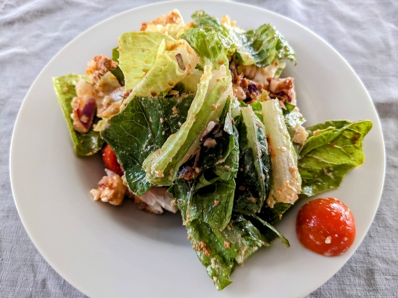

Léto a spousta čerstvé zeleniny přímo vybízí k odlehčení jídelníčku, a tak jsem i já zalovila v internetových vodách pro nějaký nový svěží recept - a objevila jsem tento skvělý salát podle My cooking diary, který je výborný, lehký, ale zároveň vás i zasytí.
- cca 300g salátu (já používám římský)
- 150g cizrny
- 12 cherry rajčat
- 5 sušených rajčat v oleji
- 1 hrst kešu oříšků
- 1 červená cibule
- balení sýru feta
Na zálivku budete potřebovat:
- 5 velkých sušených rajčat
- 1 stroužek česneku
- hrst čerstvého koriandru nebo bazalky (podle toho, co máte radši nebo co je zrovna po ruce)
- hrst kešu oříšků
- extra panenský olivový olej/olej ze sušených rajčat
- sůl, pepř
Nejprve si připravíme zálivku tak, že všechny ingredience hodíme do mixéru a mixujeme do požadované konzistence (řidší pesto) - olej přidáváme dle potřeby.
Na salát si překrajíme cherry rajčátka, cibuli a ostatní suroviny (kromě cizrny) nadrobno nasekáme. Nakonec už jen vmícháme hotovou zálivku a je to :-)
